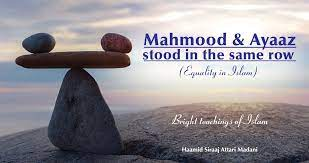

One basic element in the value system of Islam is the principle of equality or equity. This value of equality is not to be mistaken for or confused with identicalness or stereotype. Islam teaches that in the sight of Allah Almighty, all people are equal, but they are not necessarily identical. There are differences of abilities, potentials, ambitions, wealth and so on. The limitations in these examples are natural. The social limitations are those imposed by society as a result of experience and practice; in the final analysis, they are intellectual attitudes related to the previously mentioned traits. There is, for instance, the established difference between the ignorant and the learned. No one would assign major responsibilities that are crucial to the community to an ignorant person. Yet, none of these differences can by themselves, establish the status of superiority of one man or race over another. The stock of man, the color of his skin, the amount of wealth he has and the degree of prestige he enjoys have no bearing on the character and personality of the individual as far as Allah is concerned. The only distinction, which Allah recognizes is the distinction in piety; the only criterion which Allah applies, is the criterion of goodness and spiritual excellence. In the Quran, Allah Almighty Says (what means): "O mankind, indeed We have created you from male and female, and have made you into nations and tribes, that you may know one another. Indeed the most honored of you in the sight of Allah is the most righteous. Indeed, Allah is Knowing and Acquainted" [Quran 49:13] This is to assert that in Islam, no nation is created to be above other nations or to rise above them. Man's worth in the eyes of men and in the eyes of Allah is determined by the good he does, and by his obedience to Allah. The differences of race, color or social status are only incidental. They do not affect the true stature of man in the sight of Allah. Again, the value of equality is not simply a matter of constitutional rights or the agreement of noblemen or condescending charity. It is an article of faith, which the Muslim takes seriously and to which he must adhere sincerely. The foundations of this Islamic value of equality are deeply rooted in the structure of Islam.

It stems from basic principles such as the following:
(1) All men are created by One and the Same Eternal God, the Supreme Lord of all. (2) All mankind belong to the human race and share equally in the common parentage of Aadam (Adam), may Allah exalt his mention, and Eve. (3) Allah is Just and Kind to all His creatures. He is not partial to any race, age or religion. The whole Universe is His Dominion and all people are His creatures. (4) All people are born equal, in the sense that no one brings any possession with him; and they die equal in the sense that they take back nothing of their worldly belongings. (5) Allah judges every person on the basis of his own merits and according to his own deeds. (6) Allah has conferred on man, a title of honor and dignity.
Such are some of the principles behind the value of equality in Islam. When this concept is fully utilized, it will leave no place for prejudice or persecutions. And when this Divine ordinance is fully implemented, there will be no room for oppression or suppression. Concepts of chosen and gentile peoples, words such as ‘privileged’ and ‘condemned’ races, expressions such as “social castes” and “citizens” will all become meaningless and obsolete. Prophet Muhammad sallallaahu `alayhi wa sallam ( may Allah exalt his mention ) said: "O mankind, your Lord is One and your father is one. You all descended from Aadam, and Aadam was created from earth. He is most honored among you in the sight of God who is most upright. No Arab is superior to a non-Arab, no colored person to a white person, or a white person to a colored person except by Taqwa (piety)." [Ahmad and At-Tirmithi ] In another narration, the Prophet sallallaahu `alayhi wa sallam ( may Allah exalt his mention ) was asked: "Who among men is most favored by Allah?' He, sallallaahu `alayhi wa sallam ( may Allah exalt his mention ) replied: "A man who does the most good to people." [At-Tabaraani ]Therefore, it would be unrealistic to assert the absolute equality of human beings, although humans are basically equal in rights, duties and accountability, and there is some degree of similarity in physical and mental traits, which enables them to understand and apply rules and laws. At the same time, it is obvious that there is a natural diversity among human beings in terms of traits and talents; therefore there will be limitations in natural, social and political positions. Some of the limitations are temporary, some permanent; some are infrequent, some frequent. However, a limitation is specific to a particular situation. It may not be generalized to inequality in other rights. A person who is morally upright is not equal to a crook in terms of morality, but they may be equal otherwise. Nor is an intelligent person equal to a dull one, but they are equal in other spheres. In the same way, a woman is not identical to man in her traits, gifts and abilities.